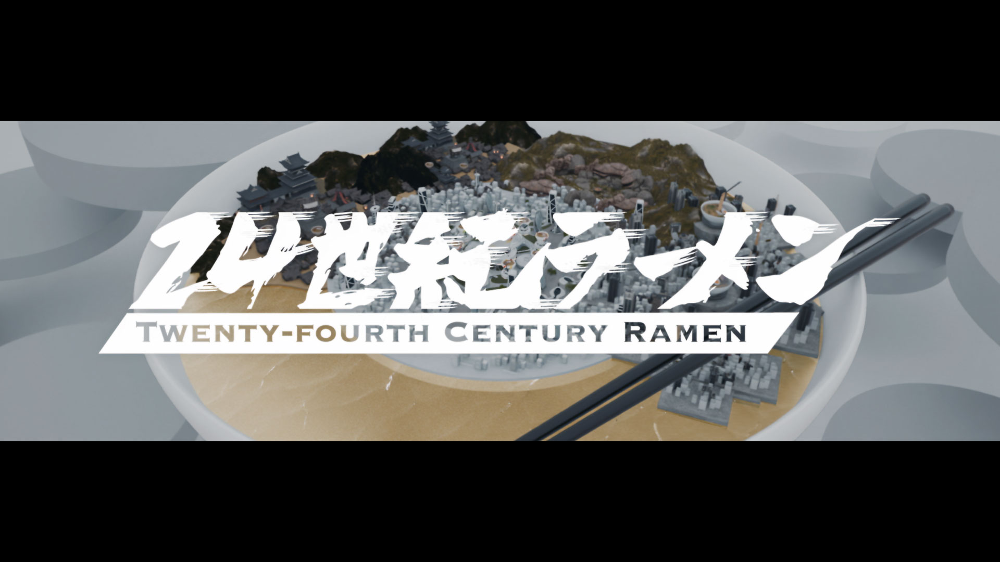

音楽は、最初の1秒で「世界観」を伝えるメディアです。 ジャケット、ティザー、ライブの一瞬、SNSのサムネイル ── 入り口は無数にあるけれど、それらが「同じひとつの作品」を指している必要があります。 本記事では、SACがアーティスト・レーベル・マネジメントと並走しながら『LAST CALL』のキービジュアルを設計した、その思考と実装を残しておきます。
CHAPTER 01ブリーフは「一語」だけだった
プロジェクトの最初のミーティングで、アーティスト本人から渡された言葉は、たった一語でした。「沈黙。」 通常、商業案件のブリーフは要件と禁止事項のリストになりがちですが、今回はその真逆。SAC側で仮説のヴィジュアルムードボードを3案立て、本人と二人三脚で削り込んでいくことが、企画段階の主作業になりました。
ムードを言語化するために、AIによる素材生成は提案ツールとして使っています。一晩で200カット以上を生成し、翌朝のミーティングで一緒に「これは違う、これは近い」を仕分けする。AIは答えではなく、対話の解像度を上げる装置として機能しました。
CHAPTER 02キービジュアルは「ジャケットではなく、装置」
従来、キービジュアルはCDジャケットやポスターのために作られていました。けれど現在の音楽プロジェクトにおいて、キービジュアルはSNSのアイコン、サブスクのサムネイル、ライブの会場演出、ティザーの素材へ、同じ画像が流れていきます。「印刷されるための一枚」ではなく、「あらゆる尺・解像度に伸縮するための装置」として設計する必要がありました。
そこでSACが採用したのは、レイヤー設計のアプローチです。最終ヴィジュアルを、被写体／余白／色／ノイズの4層に分けて作り、運用フェーズで自由に組み替えられるようにしておく。これにより、SNS用の正方形版、ライブ会場用の縦長版、サブスクのサムネイル用の横長版が、すべて同じ気配を保ったまま展開できます。
レイヤー構造の方針
- L1：被写体（人物） ／ 現場撮影。AI素材は使用しない。表情はディレクションで決める。
- L2：余白（空間） ／ AI生成。雰囲気を「沈黙」に寄せる。100枚以上のバリエーション。
- L3：色温度 ／ Lookup Table（LUT）として管理。展開先ごとに微調整可能。
- L4：ノイズ／粒子 ／ 全媒体共通の「サイン」として、フィルム粒子を全カットに統一して敷く。


CHAPTER 03ティザー映像は「動かない」ことに賭けた
SNSタイムラインで再生されるティザーは、最初の1秒の引きが命です。多くの場合「動き」と「カット数」で勝負しがちですが、本プロジェクトでは真逆の判断をしました。ほぼ動かない15秒。 被写体は呼吸しているだけ。背景は微細にゆらぐだけ。けれど、フィードを縦スクロールしていた指が一瞬止まる。「この人、なんで動いてないんだ？」という違和感を、視聴の引っ掛かりに変える設計です。
この判断は、AIが現場でリアルタイムに「もし動かしたらどう見えるか」を生成して比較できたからこそ可能になりました。判断材料が手元で揃うとき、人は過剰な動きを選ばずに済みます。
CHAPTER 04SNS展開で大事だった、たった一つのこと
本プロジェクトのSNS素材は、48パターン用意しました。Instagram用の正方形、ストーリーズ用の縦長、リール用の動画、X用の横長、ティザー、解禁日カウントダウン、それぞれ複数バリエーション。けれど、運用上、徹底したことはたった一つ。
「同じ粒子（ノイズ）が、すべての画像に乗っている」こと。これだけです。
色も構図もカット割りも、媒体ごとに変わって構わない。けれど粒子だけは絶対に揃える。タイムライン上で他の画像と並んだ時、「この粒子の感触、どこかで見た」という記憶の引っ掛かりを作る。これが、断片的な接触の中でも「同じ作品」として認識されるための、いちばん細い、いちばん強い線でした。
LAST CALL 公式特設ページ ／ 6月17日 0:00 公開予定
lastcall.example.comCHAPTER 05誰がいて、誰が作ったか
この仕事は、SAC単独では成立していません。アーティスト本人、レーベル、マネジメント、撮影現場のスタッフ、ヘアメイク、スタイリスト、印刷会社、SNS運用チーム ── 数えれば30人以上が関わっています。本記事の最後では、特にSACから入った主要なクリエイターをCREATOR一覧からリンクで紹介します。
個別のキャスティング、似た規模の音楽プロジェクトのご相談は、記事末尾のCONTACTまたはチャットから気軽にどうぞ。AIネイティブの音楽案件は、いま、年に数件しか動いていません。動いている人間の手が空いている時に、ご相談いただくのがいちばん良いタイミングです。
PROJECTMUSICKEY VISUALTEASERSNS
WRITTEN BY SAC EDITORIAL ／ 2026.04.18